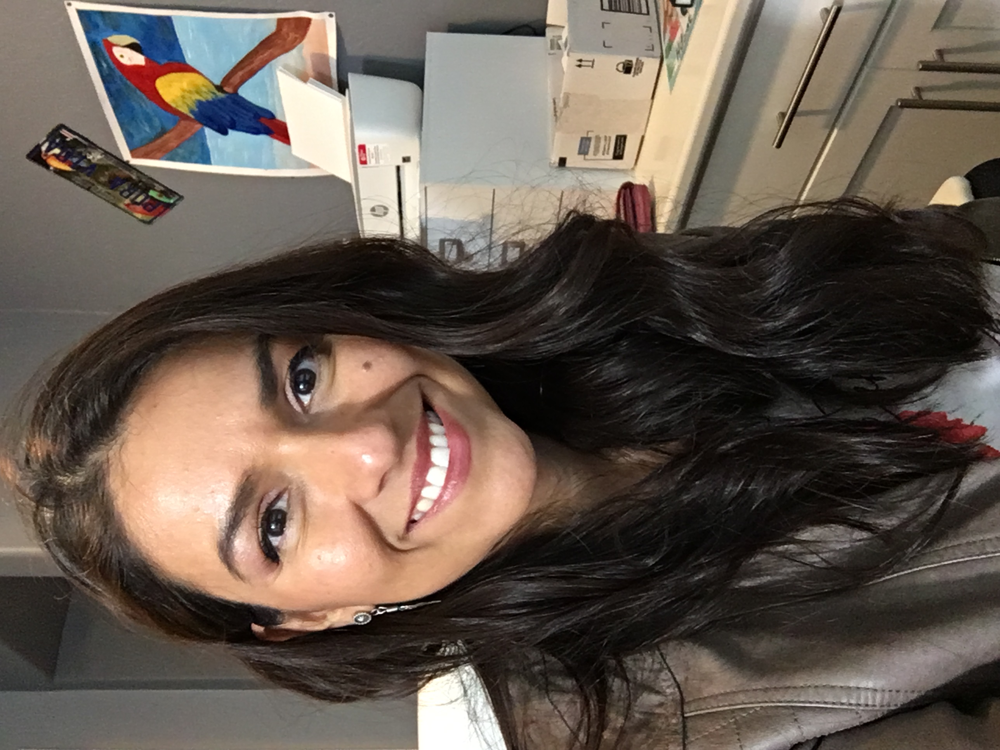

Stephanie Jimenez | WDD 130
 My name is Stephanie Jimenez and I am pursuing a degree in Professional Studies.I started in 2020 during the pandemic and completed
the Pathways program.
I already acquired my TEFL certificate and this semester I will complete the courses needed for my Graphic Design certificate.
This class is for my last certificate in web and computer programming. I have worked very hard the past 3 years. Going back to school as an adult is never easy
especially with so many responsibilities and commitments.I hope my hard work is noticed by my children and that they are learning how to work hard
to achieve their goals and dreams and that it is never too late.